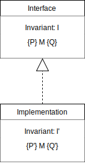
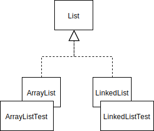
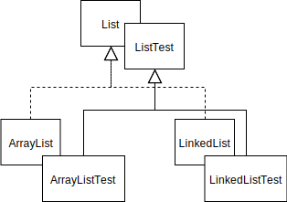

Design by Contracts and Property-Based Testing
Can the production code test itself? In this chapter, we'll discuss what design by contracts and property-based testing are.
Self Testing
A self testing system is, in principle, a system that tests itself. This may sound a bit weird. Let's take a step back first.
The way we tested systems so far was by creating separate classes for the tests. The production code and test code were completely separated. The test suite (consisting of the test classes) exercises and then observes the system under test to check whether it is acting correctly. If the system does something that is not expected by the test suite, the test suite fails. The code in the test suite is completely redundant. It does not add any behavior to the system.
With self-testing, we "move" a bit of the test suite into the system itself. These assertions we insert into production code allows the system to check if it is running correctly by itself. We do not have to run the test suite, but instead the system can check (part of) its behavior during the normal execution of the system. Like with the test suite, if anything is not acting as expected, an error will be thrown. In software testing the self-tests are used as an additional check in the system additional to the test suite.
Assertions
The simplest form of this self-testing is the assertion. An assertion is a boolean expression at a specific point in a program which will be true unless there is a bug in the program. In other words, an assertion basically says that a certain condition has to be true at the time the assertion is executed.
In Java, to make an assertion we use the assert keyword:
assert <condition> : "<message>";
The assert keywords checks if the <condition> is true.
If it is, nothing happens.
The program just continues its execution as everything is according to plan.
However, if the <condition> yields false, the assert throws an AssertionError.
We have implemented a class representing a stack, we just show the pop method:
public class MyStack {
public Element pop() {
assert count() > 0 : " The stack does not have any elements to pop."
// ... actual method body ...
assert count() == oldCount - 1;
}
}
In this method, we check if a condition holds at the start: the stack should have at least one element. Then, after the actual method we check whether the count is now one lower than before popping.
These conditions are also known as pre- and postconditions. We cover these in the following section.
Note: The assertion's message is optional, but can be very helpful for debugging. Always include a message that describes what is going wrong if the assertion is failing.
In Java, asserts can be enabled or disabled.
If the asserts are disabled, they will never throw an AssertionError even if their conditions are false.
Java's default configuration is to disable the assertions.
To enable the asserts we have to run Java with a special argument in one of these two ways: java -enableassertions or java -ea.
When using Maven or IntelliJ, the assertions are enabled automatically when running tests.
With Eclipse or Gradle, we have to enable it ourselves.
When running the system with assertions enabled, we increase the fault sensitivity of the system, i.e., the system becomes more sensible to faults. This might seem undesirable, but when executing tests, we want the tests to fail. After all, if a test fail, we just found another fault in the system that we can then fix before deploying it to final users.
Note how assertions play the role of test oracles here, but in a slightly different way. Just to remember, oracles inform us whether the software behaved correctly.
So far, we only used "value comparison" as oracle. Given an input that we devised, we knew what output to expect. For example, in a program that returns the square root of a number, given n=4, the value we expect as output is 2. Instead of focusing on a specific instances, like we did so far, property checks, like the ones we are going to see in the remaining of this chapter, are more general rules (properties) that we assert on our code. For example, a program that, given , returns , has a property that it should never return a negative number.
Assertions also serve as an extra safety measure. If it is crucial that a system runs correctly, we can use the asserts to add some additional testing during the system's execution.
However, we note that assertions do not replace unit tests. Assertions are often of a more general nature. We still need the specific cases in the unit tests. A combination of both is what we desire.
Pre- and Postconditions
We briefly mentioned pre- and postcondition in an example. Now it is time to formalize the idea and see how to create good pre- and postconditions and their influence on the code that we are writing.
Tony Hoare pioneered reasoning about programs with assertions. He proposed the now so-called Hoare Triples. A Hoare Triple consists of a set of preconditions , a program and a set of postconditions We can express the Hoare Triple as follows: . This can be read as: if we know that holds, and we execute , then, we end up in a state where holds. If there are no preconditions, i.e., no assumptions needed for the execution of , we can simply set to true.
In a Hoare Triple, the can be a single statement or a whole program. We look at as a method. Then and are the pre- and postcondition of the method respectively. Now we can write the Hoare Triple as: .
Preconditions
When writing a method, each condition that needs to hold for the method to successfully execute can be a pre-condition. These pre-conditions can be turned into assertions.
Suppose a class that keeps track of our favorite books. Let's define some pre-conditions for the merge method.
The method adds the given books to the list of favorite books and then sends some notification to, e.g., a phone.
public class FavoriteBooks {
List<Book> favorites;
// ...
public void merge(List<Book> books) {
favorites.addAll(books);
pushNotification.booksAdded(books);
}
}
When creating pre-conditions, we have to think about what needs to hold to let the method execute.
We can focus on the parameter books first.
This cannot be null, because then the addAll method will throw a NullPointerException.
It should also not be empty, because then we cannot add any books.
Finally, adding books that we already have does not make sense, so the books should not all be present in the favorites already.
Now we can take a look at the favorites.
This also cannot be null because then we cannot call addAll on favorites.
This gives us 4 pre-conditions and, thus, 4 assertions in the method:
public class FavoriteBooks {
// ...
public void merge(List<Book> books) {
assert books != null;
assert favorites != null;
assert !books.isEmpty();
assert !favorites.containsAll(books);
favorites.addAll(books);
pushNotification.booksAdded(books);
}
}
Weakening preconditions
The amount of assumptions made before a method can be executed (and, with that, the amount of pre-conditions) is a design choice.
One might want to weaken the pre-conditions, so that the method accepts/is able to handle more situations. To that aim, we can remove a pre-condition as the method itself can handle the situation where the pre-condition would be false. This makes the method more generally applicable, but is also increases its complexity. The method always has to check some extra things to handle the cases that could had been pre-conditions. Finding the balance between the amount of preconditions and complexity of the method is part of designing the system.
We can remove some of the pre-conditions of the merge method by adding some if-statements to the method.
First, we can try to remove the !books.isEmpty() assertions.
This means that the method merge has to handle empty books lists itself.
public class FavoriteBooks {
// ...
public void merge(List<Book> books) {
assert books != null;
assert favorites != null;
assert !favorites.containsAll(books);
if (!books.isEmpty()) {
favorites.addAll(books);
pushNotification.booksAdded(books);
}
}
}
By generalizing the merge method, we have removed one of the pre-conditions.
We can even remove the !favorites.containsAll(books) assertion by adding some more functionality to the method.
public class FavoriteBooks {
// ...
public void merge(List<Book> books) {
assert books != null;
assert favorites != null;
List<Book> newBooks = books.removeAll(favorites);
if (!newBooks.isEmpty()) {
favorites.addAll(newBooks);
pushNotification.booksAdded(newBooks);
}
}
}
Note that, although we increased the complexity of method by removing some of its pre-conditions and dealing with these cases in the implementation, the method now is also easier to be called by clients. After all, the method has less pre-conditions to be called.
Post-conditions
The pre-conditions of a method hold when the method is called. At the end of the method, its post-conditions should hold. In other words, the post-conditions formalize the effects that a method guarantees to have when it is done with its execution.
The merge method of the previous examples does two things.
It adds the new books to the favorites list.
Let's turn this into a boolean expression, so we can formulate this as a post-condition.
public class FavoriteBooks {
// ...
public void merge(List<Book> books) {
assert books != null;
assert favorites != null;
List<Book> newBooks = books.removeAll(favorites);
if (!newBooks.isEmpty()) {
favorites.addAll(newBooks);
pushNotification.booksAdded(newBooks);
}
assert favorites.containsAll(books);
}
}
The other effect of the method is the notification that is sent.
Unfortunately, we cannot easily formalize it as a post-condition.
In a test suite, we would probably mock the pushNotification and then use Mockito.verify to verify that booksAdded was called.
It is important to realise that these post-conditions only have to hold if the preconditions held when the method was called. In other words, if the method's pre-conditions were not fully satisfied, the method might not guarantee its post-conditions.
You also saw in the example that we could not really write assertions for some of post-conditions of the method. Post-conditions (and pre-conditions for that matter) might not cover all the possible effects; however, hopefully they do cover a relevant subset of the possible behavior.
Post-conditions of complex methods
For complex methods, the post-conditions also become more complex. That's actually another reason for keeping the method simple. If a method has multiple return statements, it is good to think if these are actually needed. Maybe it is possible to combine them to one return statement with a general post-condition. Otherwise, the post-condition essentially becomes a disjunction of propositions. Each return statement forms a possible post-condition (proposition) and the method guarantees that one of these post-conditions is met.
We have a method body that has three conditions and three different return statements. This also gives us three post-conditions. The placing of these post-conditions now becomes quite important, so the whole method is becoming rather complex with the postconditions.
if (A) {
// ...
if (B) {
// ...
assert PC1;
return ...;
} else {
// ...
assert PC2;
return ...;
}
}
// ...
assert PC3;
return ...;
Now if A and B are true, post-condition 1 should hold.
If A is true and B is false, postcondition 2 should hold.
Finally, if A is false, postcondition 3 should hold.
How weak pre-conditions affect the post-conditions?
Based on what we saw about pre- and post-conditions, we can come up with a few rules:
The weaker your pre-condition, the more situations your method is able to handle, and the less thinking your client needs to do. However, with weak pre-conditions, the method will always have to do the checking.
The post-conditions are only guaranteed if the pre-conditions held; if not, the outcome can any anything. With weak pre-conditions, the method might have to handle different situations, leading to multiple post-conditions guarded by conditions over the inputs or the program state.
Invariants
We have seen that preconditions should hold before a method's execution and postconditions should hold after a method's execution. Now we move to conditions that always have to hold, before and after a method's execution. These conditions are called invariants. An invariant is thus a condition that holds throughout the entire lifetime of a system, an object, or a data structure.
In terms of implementation, a simple way of using invariants is by creating a "checker" method.
This method will go through the data structure/object/system and will assert whether the invariants hold.
If an invariant does not hold, it will then throw an AssertionError.
For simpler invariants, it is common to see a boolean method that checks the invariants of the structure/object/system.
Suppose we have a binary tree datastructure. An invariant for this data structure would be that when a parent points to a child, then the child should point to this parent.
We can make a method that checks if this representation is correct in the given binary tree.
public void checkRep(BinaryTree tree) {
BinaryTree left = tree.getLeft();
BinaryTree right = tree.getRight();
assert (left == null || left.getParent() == tree) &&
(right == null || right.getParent() == tree)
if (left != null) {
checkRep(left);
}
if (right != null) {
checkRep(right);
}
}
In checkRep(), we first check if the children nodes of the current node are pointing to this node as parent.
Then, we continue by checking the child nodes the same way we checked the current node.
Class invariants
In Object-Oriented Programming, these checks can also be applied at the class-level. This gives us class invariants. A class invariant ensures that its conditions will be true throughout the entire lifetime of the object.
The first time a class invariant should be true is right after its construction (i.e., when the constructor method is done). The class invariant should also hold after each public method invocation. Moreover, methods can assume that, when they start, the class invariant holds.
A private method invoked by a public method can leave the object with the class invariant being false. However, the public method that invoked the private method should then fix this and end with the class invariant again being true.
This is all formalized by Bertrand Meyer as: "The class variant indicates that a proposition P can be a class invariant if it holds after construction, and before and after any call to a public method assuming that the public methods are called with their preconditions being true."
Of course, we want to know how to implement these class invariants.
To implement simple class invariant in Java, we can use the boolean method that checks if the representation is okay.
We usually call this method invariant.
We then assert the return value of this method after the constructor, and before and after each public method.
In these public methods, the only pre-conditions and post-conditions that have to hold additionally are the ones that are not in the invariant.
When handling more complicated invariants, we can split the invariant into more methods.
Then we use these methods in the invariant method.
We return to the FavoriteBooks with the merge method.
We had a pre-condition saying that favorites != null.
Given that this should always be true, we can turn it into a class variant.
Additionally, we can add the condition that pushNotification != null.
public class FavoriteBooks {
List<Book> favorites;
Listener pushNotification;
public FavoriteBooks(...) {
favorites = ...;
pushNotification = ...;
// ...
assert invariant();
}
protected boolean invariant() {
return favorites != null && pushNotification != null;
}
public void merge(List<Book> books) {
assert invariant();
// Remaining preconditions
assert books != null;
List<Book> newBooks = books.removeAll(favorites);
if (!newBooks.isEmpty()) {
favorites.addAll(newBooks);
pushNotification.booksAdded(newBooks);
}
// Remaining postconditions
assert favorites.containsAll(books);
assert invariant();
}
}
Note that the invariant method checks the two conditions.
We call invariant before and after merge and we only assert the pre- and post-conditions that are not covered in the invariant method.
We also assert the result of the invariant method at the end of the constructor.
Design by Contracts
Suppose a client system and a server system. The client makes use of the API of of the server. The client and server are bound by a contract. The server does its job as long as its methods are used properly by the client. This relates strongly to the pre- and post-conditions that we discussed earlier. The client has to use the server's methods in a way that their preconditions hold. The server then guarantees that the post-conditions will hold after the method call, i.e., makes sure the method delivers what it promises.
Note how the pre- and post-conditions of the server forms a contract between the server and the client. Designing a system following such contracts is called what we call Design by Contracts. In such design, contracts are represented by interfaces. These interfaces are used by the client and implemented by the server. The following UML diagram illustrates it:

Subcontracting
Imagine now an interface. This interface has its own pre- and post-conditions. Now, what happens to these conditions when we create another implementation of this interface (i.e., a class that implements the interface, or a class that extends some base class)?
In the UML diagram above, we see that the implementation can have different pre-, post-conditions, and invariants than its base interface.
In terms of pre-conditions, the new implementation must be able to work with the pre-conditions that were specified in the interface. After all, the interface is the only thing the client sees of the system. The implementation cannot add any pre-conditions to the server's preconditions. In terms of strength, we now know that has to be weaker than (or as weak as) .
The postcondition work the other way around. The implementation must do at least the same work as the interface, but it is allowed to do a bit more. Therefore, should be stronger than (or as strong as) .
Finally, the interface guarantees that the invariant always holds. Then, the implementation should also guarentee that at least the interface's invariant holds. So, should be stronger than (or as strong as) .
In short, using the notation of the UML diagram:
- weaker than
- stronger than
- stronger than
The subcontract (the implementation) requires no more and ensures no less than the actual contract (the interface).
Liskov Substitution Principle
The subcontracting follows the general notion of behavioral subtyping, proposed by Barbara Liskov.
The behavioral subtyping states that if we have a class T and this class has some sub-classes,
the clients or users of class T should be able to choose any of T's sub-classes.
This notion of behavioral subtyping is now known as the Liskov Substitution Principle (LSP).
In other words, the LSP states that if you use a class, you should be able to replace this class by one of its subclasses. The sub-contracting we discussed earlier is just a formalization of this principle. Proper class hierarchies follow the Liskov Substitution Principle. Leep the LSP in mind when designing and implementating a software system.
How can we test that our classes follow the LSP? To test the LSP, we have to make some test cases for the public methods of the super class and execute these tests with all its subclasses. We could just create the same tests to each of the subclasses' test suites. This, however, leads to a lot of code duplication in the test code, which we would like to avoid.
In Java, the List interface is implemented by various sub-classes.
Two examples are the ArrayList and LinkedList.
Creating the tests for each of the sub-classes separately will result in the following structure.

The ArrayList and LinkedList will behave the same for the methods defined in List. Therefore, there will be duplicate tests for these methods.
To avoid this code duplication we can create a test suite just for the super class. This test suite tests just the public methods of the super class. The tests in this test suite should then be executed for each of the sub-classes of the super class. This can be done by making the test classes extend the "super test class". The "sub test class" will have all the common tests defined in the "super test class" and its own specific tests.
This is how the test suite looks like:

Here, the ArrayListTest and LinkedListTest extend the ListTest.
List is an interface, so the ListTest should be abstract.
We cannot instantiate a List itself, so we should not be able to execute the ListTest without a test class corresponding to one of List's subclasses.
ListTest contains all the common tests of ArrayListTest and LinkedListTest.
ArrayListTest and LinkedListTest can contain their specific tests.
In the example, you can see that the hierarchy of the test classes is similar to the hierarchy of the classes they test. Therefore, we say that we use a parallel class hierarchy in our test classes.
Now we have one problem.
How do we make sure that the "super test class" executes its tests in the correct subclass?
This depends on the test class that is executed and the subclass it is testing.
If we have class T, with subclasses A and B, then when executing tests for A we need the test class of T to use an instance of A; when executing tests for B, we need the test class of T to use an instance of B.
One way to achieve this behavior is by using the Factory Method design pattern, which works as follows: In the test class for the interface level (the "super test class"), we define an abstract method that returns an instance with the interface type. By making the method abstract, we force the test classes of the concrete implementations to override it. We return the instance of the specific subclass in the overriden method. This instance is then used to execute the tests.
We want to use the Factory Method design pattern in our tests for the List.
We start by the interface level test class.
Here, we define the abstract method that gives us a List.
public abstract class ListTest {
private List list;
protected abstract List createList();
@BeforeEach
public void setUp() {
list = createList();
}
// Common List tests using list
}
Then, for this example, we create a class to test the ArrayList.
We have to override the createList method and we can define any tests specific for the ArrayList.
public class ArrayListTest extends ListTest {
@Override
protected List createList() {
return new ArrayList();
}
// Tests specific for the ArrayList
}
Now, the ArrayListTest inherits all the ListTest's tests, so these will be executed when we execute the ArrayListTest test suite.
Because the createList() method returns an ArrayList, the common test classes will use an ArrayList.
Property-Based Testing
We briefly mentioned property checks. There, we used the properties in assertions. We can also use the properties for test case generation instead of just assertions.
Given that these properties should always hold, we can test them with any input that we like. We typically make use of a generator to try a high number of different inputs, without the need of writing them all ourselves.
These generators often create a series of random input values for a test function. The test function then checks if the property holds using an assertion. For each of the generated input values, this assertion is checked. If we find an input value that makes the assertion to fail, we can affirm that the property does not hold.
The first implementation of this idea was called QuickCheck and was originally developed for Haskell. Nowadays, most languages have an implementation of QuickCheck, including Java. The Java implementation we are going to use is made by Paul Holser and is available on his github. All implementations of QuickCheck follow the same idea, but we will focus on the Java implementation.
How does it work?
- First, we define properties.
Similar to defining test methods, we use an annotation on a method with an assertion to define a property:
@Property. QuickCheck includes a number of generators for various types. For example, Strings, Integers, Lists, Dates, etc. To generate values, we can simply add some parameters to the annotated method. The arguments for these parameters will then be automatically generated by QuickCheck. Note that the existing generators are often not enough when we want to test one of our own classes; in these cases, we can create a custom generator which generates random values for this class.
Quickcheck handles the amount of generated inputs. After all, generating random values for the test input is tricky: the generator might create too much data to efficiently handle while testing.
Finally, as soon as QuickCheck finds a value that breaks the property, it starts the shrinking process. Using random input values can result in very large inputs. For example lists that are very long or strings with a lot of characters. These inputs can be very hard to debug. Smaller inputs are preferrable when it comes to testing. When an input makes the property fail, QuickCheck tries to find shrink this input while it still makes the property fail. That way it gets the small part of the larger input that actually causes the problem.
As an example: a property of Strings is that if we add two strings together, the length of the result should be the same as the sum of the lengths of the two strings summed. We can use property-based testing and the QuickCheck's implementation to make tests for this property.
@Runwith(JUnitQuickcheck.class)
public class PropertyTest {
@Property
public void concatenationLength(String s1, String s2) {
assertEquals(s1.length() + s2.length(), (s1 + s2).length())
}
}
concatenationLength had the Property anotation, so QuickCheck will generate random values for s1 and s2 and execute the test with those values.
Property-based testing changes the way we automate our tests. Usually, we just automate the execution of the tests. With property-based testing, by means of QuickCheck's implementation, we also automatically generate the inputs of the tests.
Property-based testing and AI
A lot of today's research goes into a AI for software testing is about generating good input values for the tests. We try to apply artificial intelligence to find inputs that exercise an important parts of the system.
While the research's results are very promising, there still exist difficulties with this test approach. The main problem is that if the AI generates random inputs, how do we know for sure that the outcome is correct, i.e., how do we know that the problem behaved correctly for that random value? With the unit test we made so far we manually took certain inputs, thought about the correct outcome, and made the assertion to expect that outcome. When generating random inputs, we cannot think about the outcome every time. The pre- and postconditions, contracts, and properties we discussed in this chapter can help us solve the problem. By well-defining the system in these terms, we can use them as oracles in the test cases. The properties always have to be true, so we can use them in all the randomly generated test cases.
We will discuss more about AI techniques in a future chapter.
Exercises
Exercise 1. See the code below:
public Square squareAt(int x, int y) {
assert x >= 0;
assert x < board.getWidth();
assert y >= 0;
assert y < board[x].length;
assert board != null;
Square result = board[x][y];
assert result != null;
return result;
}
What assertion(s), if any, can be turned into a class invariant?
Exercise 2. Consider the piece of code in the previous example. Suppose we remove the last assertion (line 10), which states that the result can never be null.
Are the existing preconditions of the squareAt method enough to ensure the property in the original line 10?
What can we add to the class (other than the just removed postcondition) to guarentee this property?
Exercise 3. Your colleague works on a drawing application. He has created a Rectangle class. For rectangles, the width and height can be different from each other, but can't be negative numbers.
Your colleague also defines the Square class. Squares are a special type of rectangle: the width and height should be equal and also can't be negative. Your colleague decides to implement this by making Square inherit from Rectangle.
The code for the two classes is the following.
class Rectangle {
protected int width;
protected int height;
protected boolean invariant() { return width > 0 && height > 0; }
public Rectangle(int width, int height) {
assert width > 0;
assert height > 0;
this.width = width;
this.height = height;
assert invariant()
}
public int area() {
assert invariant();
int a = width * height;
assert a > 0;
return a;
}
public void resetSize(int width, int height) {
assert width > 0;
assert height > 0;
this.width = width;
this.height = height;
assert invariant();
}
}
class Square extends Rectangle {
public Square(int x) {
assert x > 0;
super(x, x);
}
@Override
public void resetSize(int width, int height) {
assert width == height;
assert width > 0;
super.resetSize(width, height);
}
}
Inspired by Bertrand Meyer's design by contracts, he also use asserts to make sure contracts are followed. He explicitly defines preconditions and postconditions in various methods of the base Rectangle class and the derived Square class.
A second colleague comes in and expresses concerns about the design. How can you use the assertions provided to discuss the correctness of this design?
Is the second colleagues concern justified? What principle is violated, if any? Explain with the assertions shown in the code.
Exercise 4. You run your application with assertion checking enabled. Unfortunately, it reports an assertion failure signaling a class invariant violation in one of the libraries your application makes use of.
Assume that the contract of the library in question is correct, and that all relevant preconditions are encoded in assertions as well.
Can you fix this problem? If so, how? If not, why?
Exercise 5. HTTP requests return a status code which can have several values. As explained on Wikipedia:
- A 4xx status code "is intended for situations in which the error seems to have been caused by the client". A well known example is the 404 (Page not found) status code.
- A 5xx status code "indicates cases in which the server is aware that it has encountered an error or is otherwise incapable of performing the request." A well known example is the 500 (Internal Server Error) status code.
What is the best correspondence between these status codes and pre- and postconditions?
Exercise 6. A method M belongs to a class C and has a precondition P and a postcondition Q. Now, suppose that a developer creates a class C' that extends C, and creates a method M' that overrides M. Which one of the following statements correctly explains the relative strength of the pre (P') and postconditions (Q') of the overridden method M'?
- P' should be equal or weaker than P, and Q' should be equal or stronger than Q.
- P' should be equal or stronger than P, and Q' should be equal or stronger than Q.
- P' should be equal or weaker than P, and Q' should be equal or weaker than Q.
- P' should be equal or stronger than P, and Q' should be equal or weaker than Q.
Exercise 7. Which of the following is a valid reason to use assertions in your code?
- To verify expressions with side effects.
- To handle exceptional cases in the program.
- To conduct user input validation.
- To make debugging easier.
References
C2 Wiki, What are assertions? http://wiki.c2.com/?WhatAreAssertions
Mitchell, R., McKim, J., & Meyer, B. (2001). Design by contract, by example. Addison Wesley Longman Publishing Co., Inc..
Meyer, B. (2002). Design by contract. Prentice Hall.
Liskov, B. H., & Wing, J. M. (1994). A behavioral notion of subtyping. ACM Transactions on Programming Languages and Systems (TOPLAS), 16(6), 1811-1841.
"Polymorphic Server Test" in Binder, R. V. (1994). Object-oriented software testing. Communications of the ACM, 37(9), 28-30.